Working List
Direct search based on probabilitistic descent
Trust region method with AI interpolation
Matlab codes
NEWUOA-P：求解带噪声的问题
需要复制出来一份新的task 1-1，另加一个非常简单的task 1-5:
和Task 1-1完全一致，唯一的区别是：NEWUOA那条线不再使用matlab计算，而是使用fortran计算，也就是在Task1-5的文件夹里多加一条用NEWUOA求解带有和NEWUOA-P求解问题一样的噪声的线，也和NEWUOA-P和NEWUOA-N一样，从Fortran运行后的csv结果导入history_f和solution. 仍然是6条线
这是因为后面NEWUOA的matlab的接口就用不了了，这样就可以完全脱离mex接口了.
Task-A: 5个文件夹, 标黄的要有
另外附加一个read_me_special.txt: 描述如何调整matlab中的放大镜那张图
| 所有图（如-P所示） | Read_me.txt | 新Read_me.txt （两种噪声合并后） | F90中的中文注释 | |
| Task 1-1 | Y | Y | N | Y |
| Task 1-2 | N | N | Y | N |
| Task 1-3 | N | N | Y Change | N |
| Task 1-4: Task 1-2 | Y | N | Y | N |
| Task 1-4: Task 1-3 | Y | N | Y | N |
| Task 1-5 | Y | Y | N | N |
注意：加F90中的中文注释时将F90文件各新复制一份出来 (不要影响到原来没有加中文注释的F90文件)，命名为：
Task1-1-Chin-Remark.F90
注：
完善整理Task 1-2、Task 1-3，其中Task 1-3如何抽选f和g仔细想想，在matlab中比较算法时做到同步.
写好Task 1-2和Task 1-3的read_me.txt，要至少说明如何选择不同的测试函数组合.
Task 1-4: f变成f+g, g变成0, g_k变成0+噪声
优化Task 1-2的时间，不能运行时间太长.
Task 1-2：(一定要是重新的新文件夹)
独立完成和 task 1-1 同样的任务
原本：f是94个问题，g是简单的约束（罚函数）
想要：g是94个问题，f是简单的约束（罚函数）
Task 1-3：(一定要是又一个重新的新文件夹)
独立完成和 task 1-1 同样的任务
想要：g是94个问题，f也94个问题 （随机组合构成 f+g）
SUSD-TR
需要调整图例的名字（目前的图例名字太长，尽可能缩短，如果困难，写清楚如何操作来缩短）
写清楚 ：在哪里、如何修改所画图的图例和标题（目前的图例太长）
NEWUOA-soft+hard：求解球面约束无导数优化问题
NEWUOA-Python+Matlab：正在实时更新中
问题：
举例就是，比如一开始的Step1中，完成了计算我们会调用Step2，不过由于Step1还没有结束(在计算Step1中的Step2)，所以Steps1中的变量仍然被储存着。这样随着不断的循环，就会有很多很多的Step没有被关闭，matlab会储存那些冗余的变量
Other tasks
我们可以尝试基于信赖域框架,利用神经网络对函数进行逼近和拟合,鄂维南教授曾给出双层神经网络逼近任意函数时的误差分析.可以考虑分析双层神经网络所构造出的用于拟合原目标函数的模型函数是否是全线性模型或全二次模型,或者是什么新定义的模型,值得注意的是利用双层神经网络生成的模型函数的拟合误差不会出现维数灾难.
Approximation task related to Prof. E
类似地,维数灾难问题的避免还可以通过使用径向基函数来实现,相关文献等待挖掘.
此外,多层精度或多目标的无导数优化算法也是值得研究的.
关于球面约束的无导数优化方法也进行了一定的探索,这包括被称为soft-method的罚函数方法和被称为hard-method的投影方法.
无导数优化和soblev空间的范数的相关思考
参考最佳平方逼近以及自然样条插值函数满足最小势能原理的相关性质，关于二次模型函数以及其对应的高维曲面，我们可以试图去寻找可以使得二次模型函数在信赖域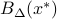内能量最小的相应系数。这一想法保证了所用的二次插值函数是符合插值方程的二次函数中能量最小的，也可以理解为不受任何外力的，具有最自然，平顺性质的.
Soblev空间
范数:
半范数:
范数=范数+半范数
For 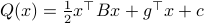, where 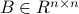, symmetric, 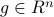, 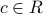 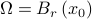
计算
或
For quadratic model function 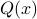
寻找用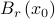的半径或体积所表示的权重系数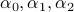,在合并同列项后使得目标函数的形式美观、简单.
有意思的Slides
Zero-Order, Black-Box, Derivative-Free, and Simulation-Based Optimization
Others
目标函数写出来之后凑然后写出KKT条件

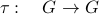
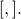 (1) 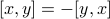
(2)双线性性
(3) 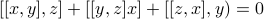
例子.李群: 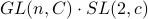
李代数: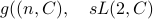